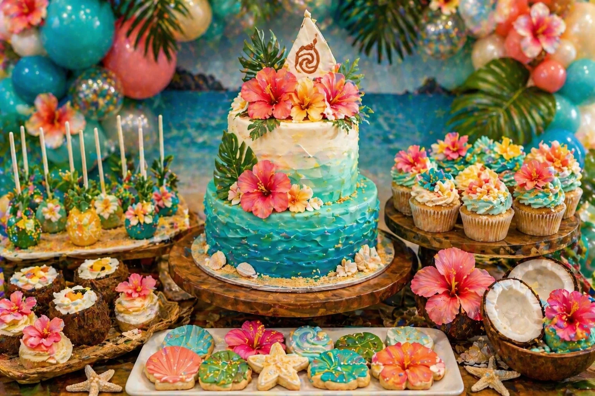
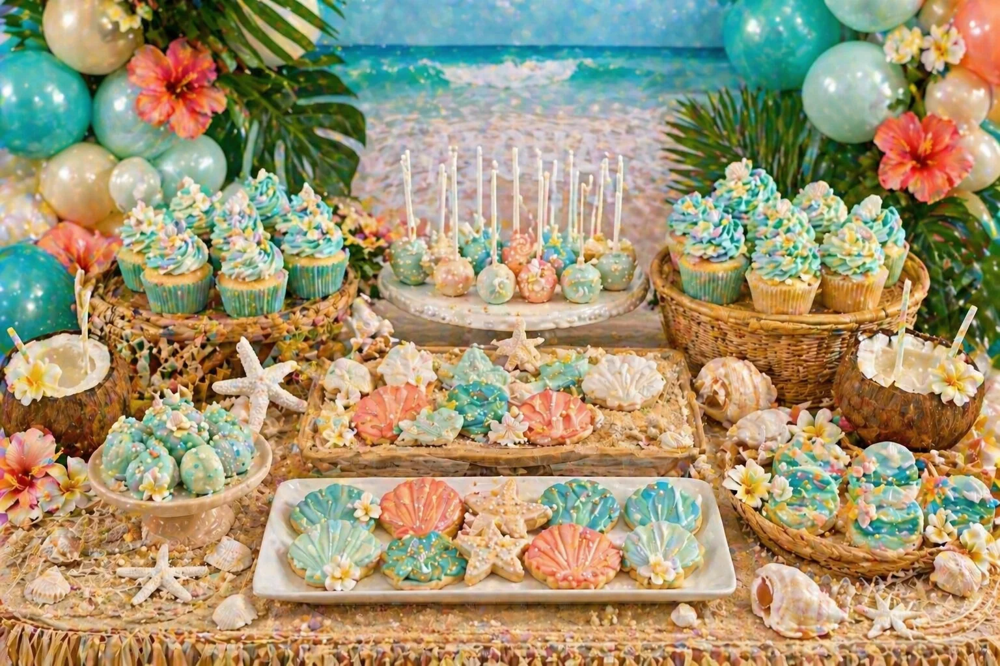

A tropical island party is a bright, colourful and summery theme for a children’s birthday celebration. With aqua balloons, coral flowers, palm leaves, ocean-style cakes, shell cookies and pineapple cake pops, the dessert table can become the main feature of the party.
At Little Moment Studio, our focus is balloon styling and celebration setups. We do not make cakes or cupcakes ourselves, but we know how important the dessert table is to the overall party look. This guide covers colour palettes, balloon ideas, cake inspiration and sweet treat ideas that work beautifully together for a tropical island theme. If you would like cupcakes or a cake to complement your balloon display, we’re happy to recommend a trusted local cake maker.
Tropical Island Party Colour Palettes
Start with the colour palette before choosing the balloons, cake or treats. For most tropical island parties, four to six colours repeated across all elements gives the most coordinated result.
| Style | Colour Palette |
|---|---|
| Classic tropical island | Aqua, turquoise, coral, sandy beige, tropical green |
| Ocean party | Aqua, seafoam, pearl white, sandy beige, soft blue |
| Hawaiian flower party | Coral, hibiscus pink, yellow, green, aqua |
| Beach and shell | Seafoam, sandy beige, pearl white, coral, soft gold |
| Tropical birthday | Turquoise, coral, yellow, white, green |
| Soft island party | Pastel aqua, blush coral, cream, sage, beige |
| Luxury tropical | Teal, champagne, ivory, coral, palm green |
| Pineapple party | Yellow, green, white, aqua, coral |
Idea 1: Ocean Blue & Coral Island Dessert Table
An ocean blue and coral island dessert table is the strongest version of this theme. It uses bright aqua tones with coral flowers and green palm leaves to create a fresh, tropical party look that instantly feels colourful, summery and celebratory.
The key elements are an aqua and turquoise balloon garland with coral accents, an ocean-style cake as the centrepiece, wave or shell cupcakes, hibiscus flowers woven through the display, and a few tropical props such as coconuts, palm leaves and rattan trays. Sandy beige adds warmth and stops the aqua tones from feeling too cool.
Balloon Combinations That Work
Aqua, turquoise, coral and sandy beige is the most consistent tropical palette. Use tropical-print balloons sparingly — one or two amongst solid colours looks far more polished than a garland that is mostly patterned. Adding palm leaf details directly into the garland gives the display much more texture and depth than balloons alone.
Idea 2: Tropical Cake & Cupcake Display
A tropical cake and cupcake display is perfect if you want the cake to be the centrepiece of the table. The cupcakes repeat the ocean colours, flowers and shell details from the cake, so every element feels connected rather than placed independently.

| Cupcake Style | Best For |
|---|---|
| Wave cupcakes | Ocean and beach theme — most popular tropical cupcake |
| Hibiscus flower cupcakes | Tropical flower table |
| Shell topper cupcakes | Beach and shell styling |
| Pineapple topper cupcakes | Bright tropical theme |
| Aqua swirl cupcakes | Ocean colour palette |
| Coral flower cupcakes | Tropical cake matching |
| Coconut cupcakes | Island treat table |
| Palm leaf cupcakes | Green tropical detail |
For tall swirls, a Wilton 1M or 2D works well. For petal and flower details, a Wilton 104 petal tip gives the most convincing hibiscus effect. For leaf details, a Wilton 352 leaf tip is ideal. See our piping tips guide for more detail, or see birthday cupcake ideas for general inspiration.
Idea 3: Beach & Shell Dessert Table
A beach and shell dessert table is a softer version of the tropical island theme. It focuses more on ocean colours, shells, starfish, sandy textures and pearl details — less hibiscus and pineapple, more seafoam and coastal calm.

This is a lovely option if you want a softer, beach-inspired table rather than a bold tropical flower setup. Seafoam, pearl white, sandy beige and soft coral work together beautifully. Props like woven trays, rattan baskets and sandy biscuit crumbs add texture without visual noise. A small number of well-chosen shell and starfish details carry the whole theme without the table needing to feel crowded.
More Tropical Party Ideas
Hawaiian Flower Party Table
A Hawaiian flower table brings in more hibiscus, coral, pink, yellow and tropical greenery. It feels bright, joyful and very summery — this is the boldest version of the tropical theme, with flower garlands, coral and yellow balloons, hibiscus cupcakes and pineapple cake pops all working together. The palette of coral, hibiscus pink, yellow, aqua, white and tropical green is very striking; keep white as a neutral between the bolder tones to stop it from feeling overwhelming.
Pineapple & Palm Leaf Party Table
A pineapple and palm leaf table is a fun and bright tropical party idea built around a strong yellow and green palette. Pineapple cake pops, palm leaf cookies, green and yellow cupcakes and a tropical cake in the same tones make this the most graphic version of the theme. Pineapple yellow, palm green, aqua, white and coral is the most balanced combination — the aqua and white stop the yellow from dominating. This version is cheerful, simple and easy to recognise across every element of the table.
First Birthday Island Party
A tropical island theme can be softened beautifully for a first birthday. Swap the vivid colours for pastel aqua, soft coral, cream, sandy beige and pearl white. A number one cake topper, gentle ocean-style cake, shell cookies and soft wave cupcakes all work beautifully without overpowering a younger child’s celebration. Keep the palette to four softer tones and avoid using too many intense colours together. See our first birthday balloon ideas for more guidance on softening bold themes.
What to Include on a Tropical Island Dessert Table
A tropical island dessert table can be simple or full depending on the size of the party. The best tables feel colourful and fresh without becoming too crowded — two or three strong themed details repeated well look better than trying to include everything at once.
| Element | Tropical Island Ideas |
|---|---|
| Cake | Ocean wave cake, island cake, tropical flower cake or beach cake |
| Cupcakes | Wave cupcakes, shell cupcakes, hibiscus cupcakes or pineapple toppers |
| Cookies | Shells, starfish, hibiscus flowers, palm leaves and pineapples |
| Cake pops | Pineapple pops, pearl pops, aqua ocean pops or coral flower pops |
| Macarons | Aqua, coral, cream, yellow or green tones |
| Sweet jars | Blue, coral, pearl or tropical colour sweets |
| Coconut cups | Tropical treat pots or coconut-style dessert cups |
| Mini desserts | Small pots with shell, flower or palm leaf toppers |
A strong full tropical island dessert table could include one ocean-style cake, twelve tropical cupcakes, shell and starfish cookies, pineapple cake pops, pearl sweet jars, coconut props, tropical flowers and palm leaves. Scaled back, an ocean cake, a dozen wave cupcakes and a few shell cookies with a well-styled balloon garland behind them is more than enough to make the theme feel complete.
Tropical Island Balloon Ideas
The balloon display creates most of the visual impact around the dessert table. An aqua and coral balloon garland with green and sandy beige accents is the most consistent starting point for this theme. For a more premium look, use palm leaves and florals woven directly into the garland to add texture and break up the colour.
| Style | Balloon Colours |
|---|---|
| Classic tropical island | Aqua, turquoise, coral, sandy beige |
| Ocean party | Aqua, seafoam, pearl white, soft blue |
| Hawaiian flower | Coral, hibiscus pink, yellow, green |
| Beach and shell | Seafoam, pearl white, sandy beige, coral |
| Pineapple party | Yellow, green, aqua, white |
| Luxury tropical | Teal, champagne, ivory, coral |
| First birthday island | Pastel aqua, cream, soft coral, beige |
A few strong tropical details — palm leaves in the garland, hibiscus flowers on the cake, shell cookies on the tray — can carry the whole table. You do not need every single element to be themed.
Matching Balloons, Cake and Cupcakes
The most polished tropical tables repeat the same colours across balloons, cake, cupcakes and props. The cake does not need to match the balloons exactly — it just needs to repeat the same colour family. For more on coordinating all elements, see how to match cupcakes with your balloon display and our balloon colour palette guide.
| Balloon Palette | Cake & Cupcake Idea |
|---|---|
| Aqua, coral, green | Ocean cake, hibiscus cupcakes, pineapple cake pops |
| Seafoam, beige, white | Shell cake, wave cupcakes, pearl cake pops |
| Coral, yellow, green | Tropical flower cake, pineapple cookies |
| Teal, ivory, champagne | Luxury tropical cake, shell cupcakes |
| Pastel aqua, cream, coral | First birthday island cake and soft cupcakes |
Cookies, Cake Pops & Treats
Cookies and cake pops are among the easiest ways to make a tropical table feel detailed and themed. Good cookie shapes include shells, starfish, hibiscus flowers, palm leaves, pineapples, coconuts, waves, tropical fish and number cookies. Displayed on woven trays or wooden stands, they add strong visual texture without requiring the cake to carry everything. Individually wrapped cookies also work well as party favours.
| Treat | Tropical Island Ideas |
|---|---|
| Cookies | Shells, starfish, hibiscus flowers, palm leaves, pineapples, coconuts and waves |
| Cake pops | Pineapple pops, pearl pops, aqua ocean pops, coral flower pops and coconut pops |
| Macarons | Aqua, coral, cream, yellow or green — display on tiered stands |
| Sweet jars | Blue, coral, pearl or tropical colour sweets to repeat the palette |
| Coconut cups | Tropical treat pots or small dessert cups with flower toppers |
What to Ask Your Cake Maker
Once you know your balloon colours and tropical theme, share them with your cake maker before they start designing. It is much easier to coordinate the whole table at the brief stage than to adjust after baking has begun.
- Can the cake match the balloon colour palette?
- Can they make an ocean wave cake or island-style cake?
- Can they make wave, hibiscus or shell cupcakes?
- Can they create shell cookies, starfish cookies or pineapple cake pops?
- Can they match aqua, coral, beige and tropical green tones together?
- What size cake is right for the number of guests?
- Are any decorations, toppers or sticks non-edible?
At Little Moment Studio, we can recommend a trusted local cake maker if you would like cupcakes or a cake to complement your balloon display.
Setting Up the Table
For a practical guide to arranging cake stands, backdrops, treats and props, see how to style a dessert table for a children’s party. That guide covers the layout and height side; this page helps you choose the tropical island theme, colours and sweet treat ideas.
Good tropical props include palm leaves, hibiscus flowers, coconuts, pineapples, shells, starfish, rattan trays, woven baskets and wooden cake stands. Sandy biscuit crumbs scattered across the table add texture and reinforce the beach theme without any extra cost. Use two or three strong tropical details and repeat them — it almost always looks better than trying to include every element at once.
For help planning the balloon garland that frames the table, we would love to hear from you. We can also recommend a trusted local cake maker if you would like cupcakes or a cake to complete the display.
Planning a Tropical Island Party in Kent?
Little Moment Studio creates balloon displays and styled celebration setups for birthdays across Sittingbourne and Kent. We can help with the aqua balloon garland, tropical backdrop and overall party look — and we’re happy to recommend a trusted local cake maker too.